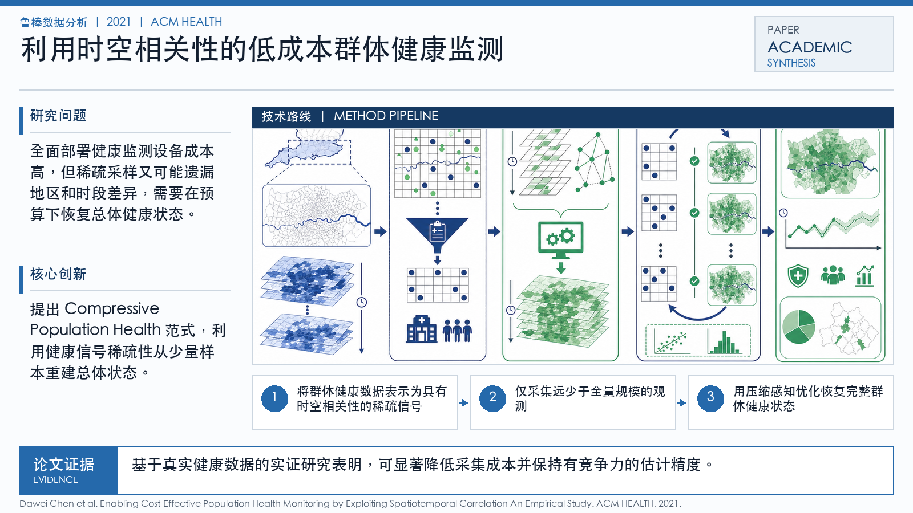

Problem
解决的问题
全面部署健康监测设备成本高，但稀疏采样又可能遗漏地区和时段差异，需要在预算下恢复总体健康状态。
Robust Data Analytics · 2021 · ACM HEALTH
Enabling Cost-Effective Population Health Monitoring by Exploiting Spatiotemporal Correlation An Empirical Study
Problem
全面部署健康监测设备成本高，但稀疏采样又可能遗漏地区和时段差异，需要在预算下恢复总体健康状态。
Value
基于真实健康数据的实证研究表明，可显著降低采集成本并保持有竞争力的估计精度。
Paper-grounded Academic Summary
该代表页依据原文摘要、贡献段与方法图注生成。方法视觉由 ImageGen 按论文证据逐篇绘制，中文研究问题、技术路线、创新点与实验结论采用确定性排版，以保证内容与字符准确。
打开原文 PDF
Technical Route
Innovation